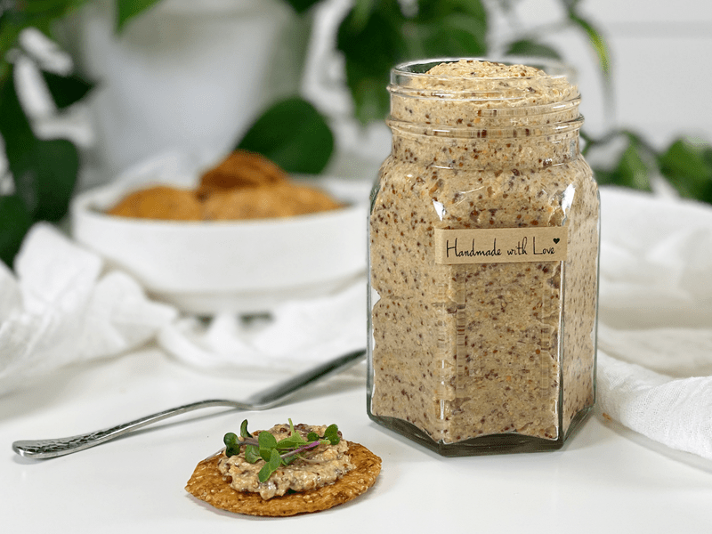
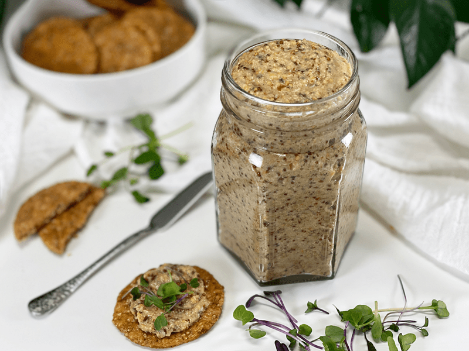
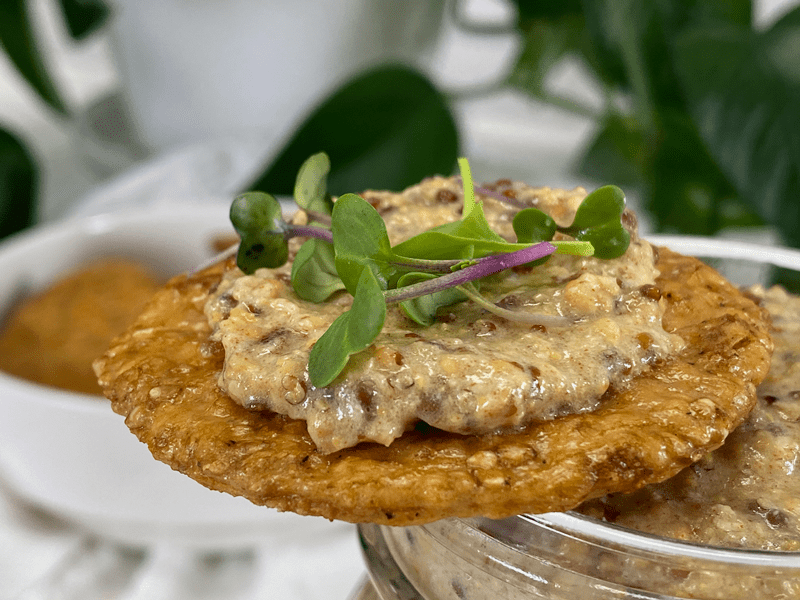
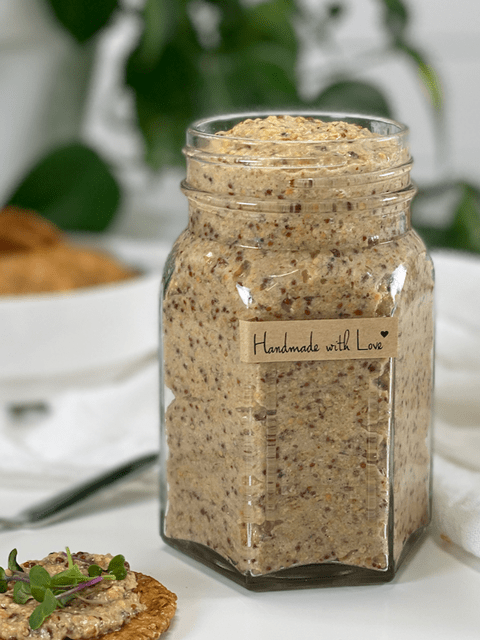

Sweet and Spicy Mustard
Sweet and Spicy Mustard
There is nothing like homemade Sweet & Spicy Mustard. When I make this recipe, I usually make a double batch and package it in small jars to share with our friends and family. I will warn you, though, that it does pack a punch (heat!), so this mustard isn’t for the faint of heart. I shared some with my grandmother, and much to my surprise, she really loved i;, she said it had the flavor of horseradish. She wasn’t quite on board with my passion for raw foods, so to please her with one of my creations really brings me great joy.

It is so simple and inexpensive to make that I don’t think we will ever purchase mustard again. There are several recipes on my site that use this mustard as an ingredient, so I encourage you to make a batch and keep it in your fridge. It will last 2-3 months.
When the time comes to purchase the seeds, you will find that they come in yellow/white, brown, and black… though personally, I have yet to find the black ones locally. There is a difference in flavor; black seeds are sharp in flavor and have a nutty aftertaste. The brown is sweeter and milder than the black, and the yellow/white seeds are very subtle in flavor. The rule of thumb is that the smaller and darker the seed is, the hotter it will be.

Mustard seeds are quite amazing. I have this great book called Healing Spices that seems to follow me throughout the house. Tonight I had a chill from a Fall rainstorm. I drew a nice hot bubble bath and buried myself deep in the bubbles with just enough skin exposed to the air to hold my book. As I was thumbing through, I stopped on mustard seeds., here is some of what I read.

Mustard seeds are a very good source of selenium and omega-3 fatty acids. They are also a good source of phosphorus, magnesium, manganese, dietary fiber, iron, calcium, protein, niacin, and zinc. If you are new to using these seeds, they don’t have any smell or taste UNTIL… they are cracked and exposed to cold water. This is when an enzyme referred to as myrosinase is released, and then mustard mayhem starts. It takes all of ten minutes for the seeds to reach their optimum flavor. The secret to making good mustard is to activate the seeds, then neutralize them with an acid, such as lemon juice or vinegar. Now come on… that is quite fascinating if you ask me. You did ask… right? hehe Please enjoy this recipe. blessings, amie sue

Ingredients:
Yields about 2 cups
- 3/4 cup mustard seeds, brown / yellow
- 1/2 cup lemon juice
- 5 Medjool dates, pitted
- 2 Tbsp tamari gluten-free soy sauce
Preparation:
- Soak the mustard seeds in 1 cup of water for 4-8 hours.
- Do not drain off any water; there shouldn’t be any due to the seeds soaking it up.
- I recommend using a combination of yellow and brown seeds.
- If you plan on making a double batch, do it one batch at a time, as it can be a bit taxing on your blender.
- Place the soaked seeds, lemon juice, dates, and tamari in the blender and blend to form a smooth paste.
- You can blend it smooth or leave bits of seeds nice and visible.
- I used the Vitamix blender and blended for 10 seconds on high.
- Store in a glass jar in the fridge for up to 2 months.
© AmieSue.com